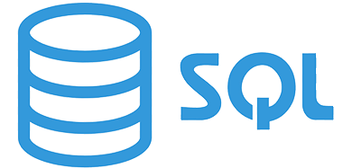
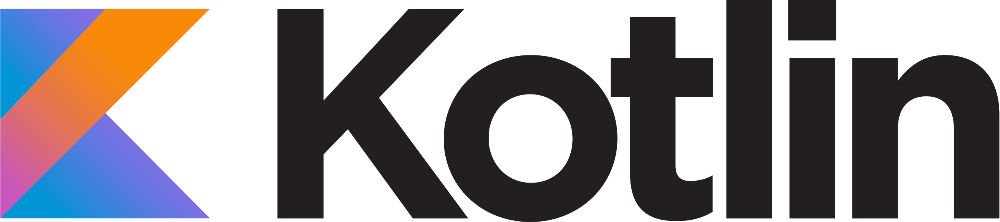

Nivel de habilidad: Medio

Nivel de habilidad: Medio

Nivel de habilidad: Medio

Nivel de habilidad: Medio

Nivel de habilidad: Medio

Nivel de habilidad: Básico

Nivel de habilidad: Básico

Quiero aprender a utilizar Arduino porque me parece increíble como con una pequeña tarjeta y mucha
imaginación se puedan hacer proyectos y efectos tan fantásticos en robótica.

Deseo aprender C# porque uno de mis más grandes sueños es desarrollar videojuegos y sé que esta es una
gran herramienta para poder lograrlo debido a que es utilizado en motores gráficos como Unity.

Me gustaría aprender Express porque es una gran adición a Node.js y, para desarrollo full-stack,
es muy importante complementarlos el uno con el otro.

Flask es una de las adiciones que quiero hacer en mis habilidades porque me gusta mucho Python y el hecho
que tenga un framework para desarrollar páginas web es increíble, por lo tanto no lo puedo dejar pasar.

Quiero aprender Kotlin porque me gustaría crear por lo menos una aplicación para android y creo que
sería una forma interesante de descubrir como funcionan las apps de móbiles a profundidad.

NoSQL es una tecnología que está innovando y está siendo utilizada cada vez por más proyectos, por lo que considero
que es importante ya que le da un aire totalmente diferente a las bases de datos, por eso Mongodb me parece una
gran herramienta para tener en mi repertorio.

NodeJs es importantísimo en el desarrollo back-end, como mi deseo es ser desarrollador full-stack,
es vital que lo agregue también a mis habilidades.

Me gustaría aprender React.js ya que es fundamental en el desarrollo web como una librería muy útil para
Javascript que ayuda a complementar y a tener páginas web de mayor calidad.

SASS me pareció muy interesante desde el primer el momento en que lo descubrí ya que le agrega muchas
funciones y utilidades muy logradas e importantes a CSS, quiero aprenderlo porque si css hace magia en las
páginas html, lo que es capaz de hacer SASS es todavía mejor.